🦉 Eulenpfad — Anleitung für Erwachsene
Für Eltern, Lehrpersonen und alle, die Kinder beim Üben begleiten: Konten anlegen, Lernplan setzen, Spiele freigeben, Fortschritt ansehen, Meldungen der Kinder bearbeiten, Daten sichern und zwischen Geräten abgleichen.
1. Das Wichtigste vorab
- Alles bleibt auf diesem Gerät. Namen, Klasse und gespielte Runden speichert nur der Browser. Nichts geht von selbst an einen Server, es gibt kein Konto bei einem Dienst und keine Werbung. Daten verlassen das Gerät nur auf Knopfdruck: beim Sichern, beim Abgleich in einen Ordner, den Sie wählen, beim Weiterleiten einer Fehlermeldung (ohne den Namen des Kindes, per E-Mail oder an den Meldungsserver der Entwicklung), wenn ein Kind ein Abzeichen als Bild teilt (mit seinem Vornamen) und wenn Sie einem Kind der 6. Klasse eine Einladung zum Lernsteig mitgeben (Link oder Datei mit Vorname, Geburtsdatum und Klasse). Alles dazu: Impressum und Datenschutz.
- Nur Vornamen. Für die Kinder genügt ein Vorname oder ein Spitzname — keine Nachnamen, keine Schule, keine Fotos.
- Daten sichern. Wer die Browserdaten löscht, löscht auch die Spielstände. Sichern Sie deshalb ab und zu (Abschnitt 15).
- Fehler sind nicht schlimm. Bei einer falschen Antwort gibt die Eule einen Hinweis, und das Kind versucht es nochmals. Es gibt keinen Punktabzug und standardmässig keinen Zeitdruck.
2. Erster Start: Aufsicht einrichten
Beim ersten Öffnen ist noch niemand da. Ein Kind kann mit 🐣 Ich bin neu → „Ich bin ein Kind“ gleich selbst anfangen: Vorname, Klasse, Bild — und los. Die Aufsicht richtet eine erwachsene Person ein, wann es passt: 🐣 Ich bin neu → „Ich bin erwachsen“. Erst dann gibt es Freigaben, Wochenziel und Meldungen.
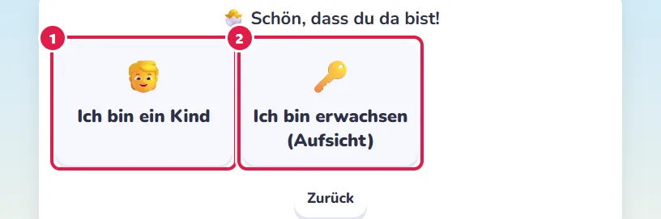
- Ich bin ein Kind: Kinder legen sich so selbst an, oder Sie legen sie in der Verwaltung an (Abschnitt 6). Soll das nur die Aufsicht dürfen (etwa in einer Klasse), schalten Sie in den Einstellungen „Kinder legen sich selbst an“ aus.
- Ich bin erwachsen (Aufsicht): Zuerst kommt eine Rechenfrage, die über dem Stoff der Primarschule liegt (etwa √144) — sie hält Kinder davon ab, sich als Aufsicht anzulegen. Dann Ihren Namen und zweimal eine PIN mit 4 bis 6 Ziffern, „Einrichten“. Gibt es schon eine Aufsicht, bestätigt sie die neue mit ihrer PIN.
Merken Sie sich die PIN. Gespeichert wird nur ein verschlüsselter Prüfwert. Beim Einrichten wählen Sie dazu eine Sicherheitsfrage (eine, deren Antwort Ihre Kinder nicht kennen) und bekommen einmal einen Wiederherstellungscode zu sehen: Schreiben Sie ihn auf und bewahren Sie ihn fern von den Kindern auf. Haben Sie die PIN vergessen, tippen Sie bei der PIN-Abfrage auf PIN vergessen? und beantworten die Rechenfrage für Erwachsene: Eine zweite Aufsicht setzt die PIN in der Verwaltung neu, sonst helfen Code oder Sicherheitsfrage. Fehlt beides, bleibt das Zurücksetzen: Nach 3 Tagen, in denen die Anmeldung für alle sichtbar darauf hinweist, wird jede Aufsicht zu einem gewöhnlichen Konto, und Sie richten eine neue ein; wer die PIN oder den Code noch kennt, kann es abbrechen. Die Daten der Kinder bleiben. Einen neuen Wiederherstellungscode oder eine andere Sicherheitsfrage richten Sie jederzeit unter Verwaltung → Konten → „🔑 Falls Sie Ihre PIN vergessen“ ein.
Kinder sind beim Herausfinden von PINs erfinderisch: Sie schauen beim Tippen zu, probieren Geburtstage, Jahrgänge, die Hausnummer oder 1234 und erkennen Fingerspuren auf dem Bildschirm. Wählen Sie darum keine Zahl, die mit Ihnen oder der Familie zu tun hat, tippen Sie die PIN verdeckt ein, melden Sie sich nach der Verwaltung ab (↩ Abmelden) und setzen Sie eine neue PIN, wenn Sie vermuten, dass ein Kind sie kennt. Mit der PIN könnte ein Kind Spiele freigeben, Einstellungen ändern oder Runden löschen.
3. Anmelden und wechseln
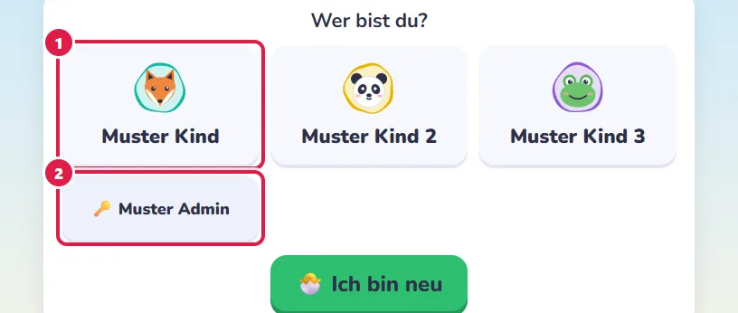
- Kinder tippen einfach auf ihren Namen — ohne PIN.
- Die Aufsicht (mit 🔑) braucht ihre PIN.
- Hier tippen Sie Ihre PIN ein — verdeckt, damit kein Kind mitliest.
Die Anmeldung der Aufsicht gilt nur, solange dieser Browser-Tab offen ist. Wer ihn schliesst, ist wieder abgemeldet — so bleibt die Verwaltung den Kindern verschlossen. Gewechselt wird oben rechts: Ein Tippen auf Bild und Namen öffnet die Liste der anderen Personen und darunter „↩ Abmelden“. In einem Spiel führt „wechseln“ zur Anmeldung. Daneben öffnet 📖 diese Anleitung.
4. Die fünf Bereiche
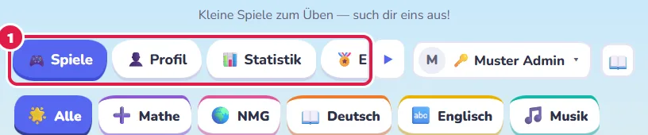
- Oben wählen Sie den Bereich; passen nicht alle in die Zeile, blättert ▶ zu den übrigen.
- 🎮 Spiele — alle Spiele nach Fach und Thema, mit Suche, Filtern und dem Zufall (Abschnitt 5).
- 👤 Profil — das Kind wählt hier nur sein Bild: ein Tier, etwas aus Weltall und Technik, eine Fantasiefigur oder ein Bild aus den Spielen, dazu Farbe, Rahmen und Form (rund, Quadrat, Dreieck, Fünfeck). Ein Abzeichen in Gold schaltet sein Symbol als Bild frei, das erste Abzeichen in Gold, Platin oder Diamant einen edleren Rahmen; Sie sehen es im Profil des Kindes, ändern kann es nur das Kind. Oben im Profil setzen Sie das Geburtsdatum (das Alter rechnet die App; kennt ein älteres Profil nur Monat und Jahr, bittet es, den Tag nachzutragen), Klasse und Fokus-Lernziele und die Vorgaben für Vorlesen, Reihenfolge der Teile und Timer und bestätigen mit „Speichern“ gleich darunter. Was das Kind selbst umstellen darf — Vorlesen, Reihenfolge der Teile, Timer, hell oder dunkel —, steht unten unter 🔒 Was … selbst umstellen darf: je Punkt „wie alle Kinder“ (Verwaltung → Einstellungen → Kinder), „darf selbst umstellen“ oder 🔒 fest. Das wirkt sofort, ohne Speichern; ↺ Auf Vorgabe zurück löscht seine eigene Wahl. Aus der Klasse schlägt jedes Spiel eine passende Stufe vor. Zum neuen Schuljahr mit dem Knopf ⬆️ In die … Klasse neben der Klasse aufsteigen lassen: einzeln hier, für mehrere Kinder auf einmal in Verwaltung → Konten → „Neues Schuljahr“. Das Kind sieht beim nächsten Anmelden eine Nachricht und bekommt das Abzeichen „Aufgestiegen“; ↶ Zurücknehmen macht einen Aufstieg aus Versehen rückgängig. Die Klasse von Hand ändern ist eine Korrektur und zählt nicht als Aufstieg. Nach der 6. Klasse geht es im Lernsteig weiter: 📨 Einladung zum Lernsteig gibt dem Kind den Übertritt mit, als Link (🔗 Link kopieren) oder Datei (💾 Als Datei) — nur Vorname, Geburtsdatum und die 7. Klasse.
- 📊 Statistik — was geübt wurde, was sitzt, ein Fazit in Worten, Empfehlungen (Abschnitt 12).
- 🏅 Erfolge — Wochenziel und Abzeichen (Abschnitt 13).
- ⚙️ Verwaltung — nur für die Aufsicht: Konten, Freigabe, Abgleich, Einstellungen, Meldungen und Entwicklung (Abschnitt 18).
Das Kind sieht in der Statistik nur, was es als Nächstes üben kann, seine Woche, seine Runden und seine Meldungen; alle Auswertungen sehen Sie. Im Profil eines Kindes:
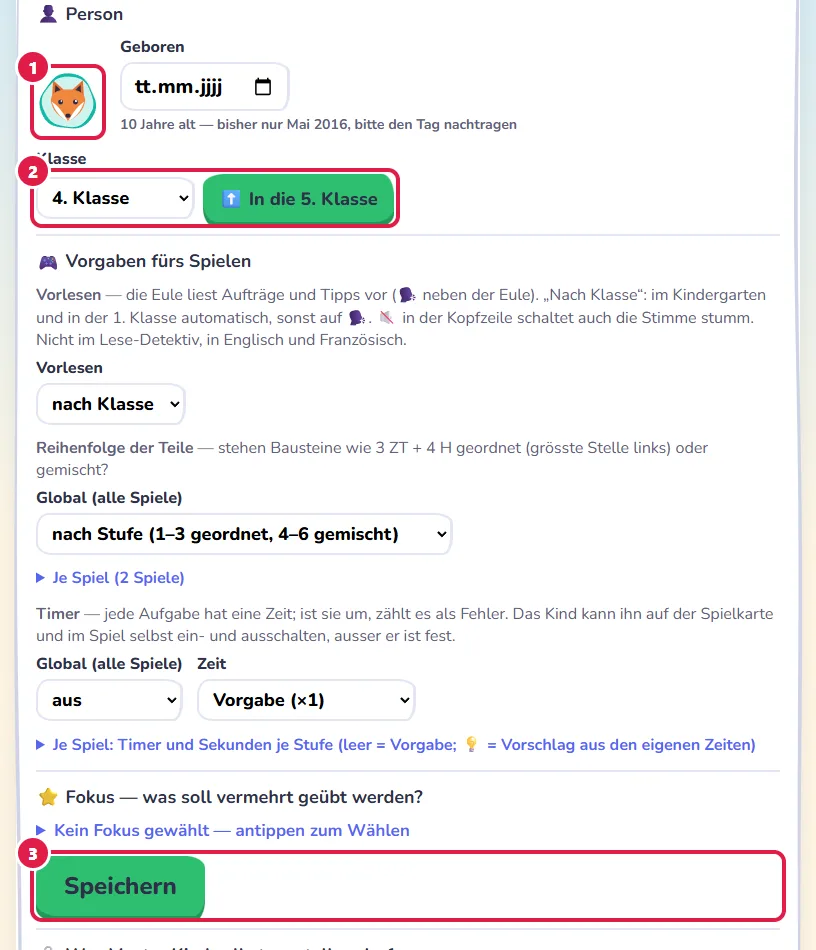
- Das Bild, das das Kind gewählt hat — nur zum Ansehen.
- Klasse mit ⬆️ Aufstieg ins nächste Schuljahr.
- Speichern für alles darüber: Person, Vorgaben fürs Spielen, Fokus.
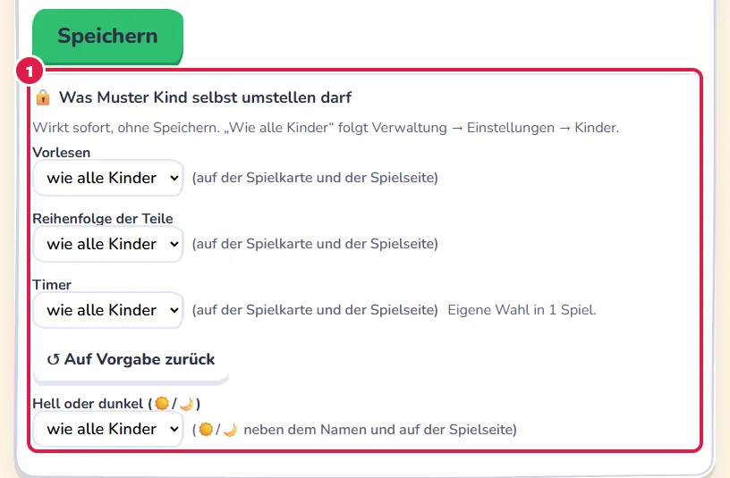
- Was das Kind selbst umstellen darf: je Punkt wie alle Kinder, darf selbst umstellen oder 🔒 fest — wirkt sofort, ohne Speichern. Hat das Kind selbst etwas umgestellt, steht daneben ↺ Auf Vorgabe zurück.
5. Spiele finden
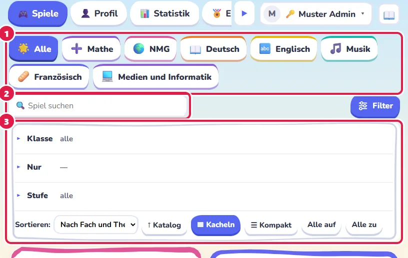
- Fach wählen Sie mit den bunten Reitern über den Spielen (🌟 Alle, ➕ Mathe, 📖 Deutsch …).
- Suche nach Name, Lernziel, Beschreibung oder Inhalt; die besten Treffer kommen zuerst. Für ein Kind rücken Spiele etwas nach vorn, die zu seiner Klasse und zu dem passen, was es noch üben sollte.
- Filter klappt die übrigen Gruppen auf: Klasse (für welche Klasse ein Spiel gedacht ist, dazu 🎒 Meine Klasse — für Kinder Spiele, die zu ihrer Klasse passen; vorgegeben an, das Kind darf es ausschalten), Nur (⭐ Mein Fokus, für die Aufsicht 🔍 Zu prüfen), Thema (wenn ein Fach gewählt ist) und Stufe. Darunter Sortieren, ▦ Kacheln oder ☰ Kompakt und „Alle auf“ / „Alle zu“. Jede Gruppe klappt für sich auf; zugeklappt nennt sie, was gilt. Thema, Stufe und Klasse lassen sich mehrfach wählen; „Alle“ wählt alles an und, nochmals getippt, alles ab. Schaltet ein Kind „Meine Klasse“ aus, steht oben links auf jeder Karte ein Zeichen, wie ein Spiel zu seiner Klasse steht, und der Rand der Karte hat die Farbe dazu: ✓ Türkis leichter, ● Gold seine Klasse, ▲ Violett eine Herausforderung; eine kleine Legende steht über den Karten.
Vor den Spielen stehen zwei Karten für den Zufall:
- 🎲 Zufallsmix — Aufgaben aus vielen Spielen gemischt; das Kind stellt ein, wie schwer, wie lang und ob mit Timer.
- 🎯 Zufälliges Spiel (für Kinder „Überrasch mich“) — die Eule zieht ein Spiel aus der gefilterten Auswahl, eher eines, das noch Übung braucht oder lange nicht mehr dran war; mit ♾ auf der Karte ein Endlos-Spiel.
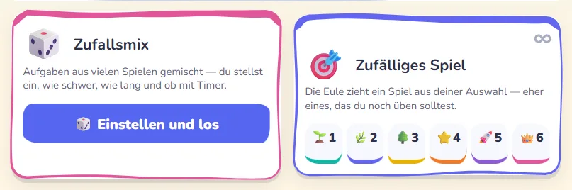
Auf jeder Karte stehen oben rechts kleine Schalter: Teile (nur in Spielen mit Bausteinen; antippen wechselt nach Stufe → geordnet → gemischt), ⏱ Timer, ♾ Endlos und ☆ Favorit. Was die Aufsicht festgelegt hat, trägt 🔒. Favoriten stehen oben in einem goldenen Feld; dort entfernt „☆ Alle Favoriten entfernen“ (zweimal tippen) alle auf einmal. Kinder sehen auf der Karte Bild, Namen und Stufen, ⓘ sagt ihnen, worum es geht; die Aufsicht sieht dazu Beschreibung, Lernziel und Sperrgrund.
Auf dem Startbild und am Ende jedes Spiels führt 🔗 Ähnliche Spiele zu Spielen mit demselben Lernziel oder Thema.
Sortieren (im aufgeklappten Filter): Vorgegeben stehen die Spiele nach Fach und Thema. Daneben gibt es „passt zu dir zuerst“, Alphabet und Klasse, je auf- oder absteigend. Die Aufsicht wählt immer selbst; Kinder ab der 4. Klasse auch (Einstellungen). Je Kind lässt sich beides in den Konten abweichend setzen (Spalte 🔀).
Alle Spiele auf einen Blick: Im Portal unter „📋 Alle Spiele“ steht eine Tabelle mit Fach, Thema, Spielweise, Klasse und ob ein Spiel schon geprüft und für Kinder frei ist — nach mehreren Spalten sortierbar.
6. Kinder, Konten und Lernplan
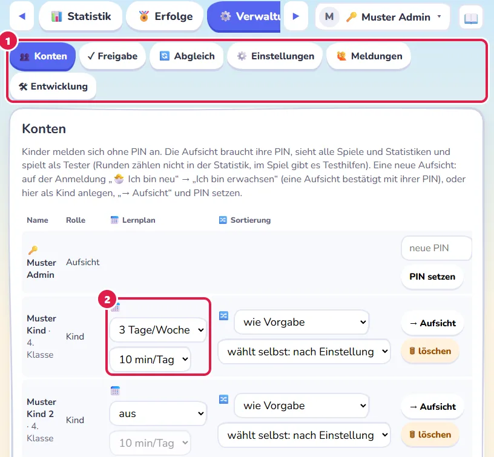
- Die Verwaltung hat Untertabs; hier Konten.
- 📅 Lernplan: je Kind Tage pro Woche und Minuten je Tag, zum Beispiel 3 Tage × 10 Minuten. Jede erfüllte Woche gibt dem Kind einen Wochenstern 🌟 — unabhängig von Fehlern und Tempo. „aus“ heisst kein Ziel.
Weiter unter Konten:
- Neues Kind: Vorname und Klasse eingeben, „＋ Anlegen“. Als Klasse geht auch Kindergarten: Dann beginnen die Spiele der 1. Klasse auf Stufe 1, und die Eule liest von selbst vor (Abschnitt 8).
- → Aufsicht: macht aus einem Konto eine weitere Aufsicht (zum Beispiel für den zweiten Elternteil); danach bei diesem Konto eine PIN setzen.
- → Kind macht eine Aufsicht wieder zu einem gewöhnlichen Konto.
- PIN setzen: neue PIN für eine Aufsicht, auch wenn sie ihre vergessen hat.
- 🗑 löschen: entfernt das Konto eines Kindes. Vorher sichern, wenn seine Runden erhalten bleiben sollen.
- 🙈 auf diesem Gerät ausblenden: bei einer Aufsicht, die von einem anderen Gerät gesperrt angekommen ist (🔒) — sie verschwindet hier von der Anmeldung, bleibt aber auf ihrem eigenen Gerät; „👁 wieder zeigen“ holt sie zurück.
7. Spiele, Stufen, Timer, Endlos
Jedes Spiel übt ein Lernziel aus dem Lehrplan Volksschule St. Gallen und hat sechs Stufen, bezogen auf die Klasse, für die das Spiel gedacht ist:
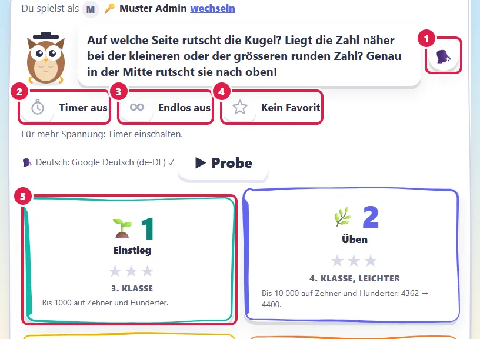
- 🗣️ neben der Eule liest die Einleitung vor (Abschnitt 8).
- ⏱ Timer — zuschaltbar für mehr Spannung. Läuft die Zeit ab, zählt das als Fehler, die Aufgabe bleibt aber lösbar. Gemessen wird die Zeit je Aufgabe immer (für die Statistik).
- ♾ Endlos — ist er an, startet jede Stufe, die es anbietet, im Endlos-Modus: so viele Aufgaben wie möglich ohne Fehler (Abschnitt 9).
- ☆ Favorit — das Spiel steht oben im Bereich Spiele bei den Favoriten.
- Stufen — 🌱 1 Einstieg (eine Klasse tiefer) · 🌿 2 Üben · 🌳 3 Klassenziel · ⭐ 4 Knifflig · 🚀 5 Nächste Klasse · 👑 6 Königsstufe. Jede Stufe zeigt Nummer, Namen, die besten Sterne und für welche Klasse sie gedacht ist; 👍 markiert die empfohlene. Was die Stufe übt, sehen Sie offen, Kinder hinter ⓘ.
In Spielen mit Bausteinen steht vorne der Schalter Teile (nach Stufe, geordnet, gemischt). Unter dem zuletzt geänderten Schalter steht leise, was er bewirkt.
Eine Runde hat meist 8 Aufgaben und dauert 2 bis 5 Minuten. Am Ende gibt es 1 bis 3 Sterne; ein Fehler zählt dabei voll, ein geholter Tipp halb — fragen ist günstiger als raten.
8. Im Spiel: Hilfe, Tipp, Vorlesen, Melden, Notizen
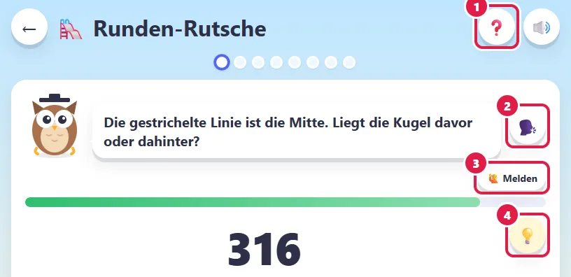
- ❓ Hilfe erklärt, wie das Spiel geht. Die Uhr hält dabei an.
- 🗣️ Vorlesen — die Eule liest Auftrag und Tipps vor. Im Kindergarten und in der 1. Klasse geschieht das von selbst, sonst auf Knopfdruck. Ein langes Drücken auf 🗣️ schaltet „immer gleich vorlesen“ ein oder aus (dann goldener Ring). Die Vorgabe setzen Sie im Profil und legen dort fest, ob das Kind sie umstellen darf. Bleibt der Auftrag von Aufgabe zu Aufgabe gleich, liest sie ihn nur beim ersten Mal. Den Stoff eines Lesespiels liest sie nie vor, und nicht in Englisch und Französisch. Den Knopf gibt es nur, wenn das Gerät eine deutsche Stimme hat.
- 🙋 Melden — das Kind meldet einen Fehler im Spiel, mit kurzer Begründung (Abschnitt 14). Wer melden darf, stellen Sie ein (Abschnitt 17).
- 💡 Tipp hilft bei der aktuellen Aufgabe; jedes Antippen zeigt den nächsten. Nicht im Endlos-Modus.
Langes Drücken auf einen Knopf liest seinen Text vor (nicht in Deutsch-Spielen, wo die Wörter der Stoff sind). Der Ton-Schalter 🔊/🔇 oben rechts schaltet Töne und Stimme zusammen aus. Während einer Ruhezeit (Abschnitt 17) können Klänge, Vorlesen und Hören ruhen.
⌨️ Mit der Tastatur: Am Computer tragen die Antwortknöpfe oben rechts eine kleine Taste. Gleiche Zeichen liegen in jedem Spiel auf denselben Tasten (Schweizer Tastatur): < = > auf Y X C, + − · : auf V B N M, die Stellen auf E Z H T M (ZT und HT mit ⇧), Satzzeichen auf , . und - (oder getippt wie gewohnt), ⌫ auf die Rücktaste, Buchstaben und einzelne Ziffern auf sich selbst, alles andere der Reihe nach auf A S D F G H J K L. Zahlen tippt man wie bisher mit den Ziffern und Enter. Chrome und Edge erkennen eine andere Tastatur und beschriften danach. Spiele, die nur mit Zeigen oder Ziehen gehen, haben keine Tasten.
✏️ Notizen und 📝 Notizblock
✏️ Notizen: In Aufgaben mit mehreren Rechenschritten stehen kleine Felder für Zwischenergebnisse, dort, wo sie hingehören — etwa auf den Pfeilen der Rechen-Maschine. Jedes Feld sagt, was hineingehört. Für schriftliches Rechnen gibt es den Notizblock:
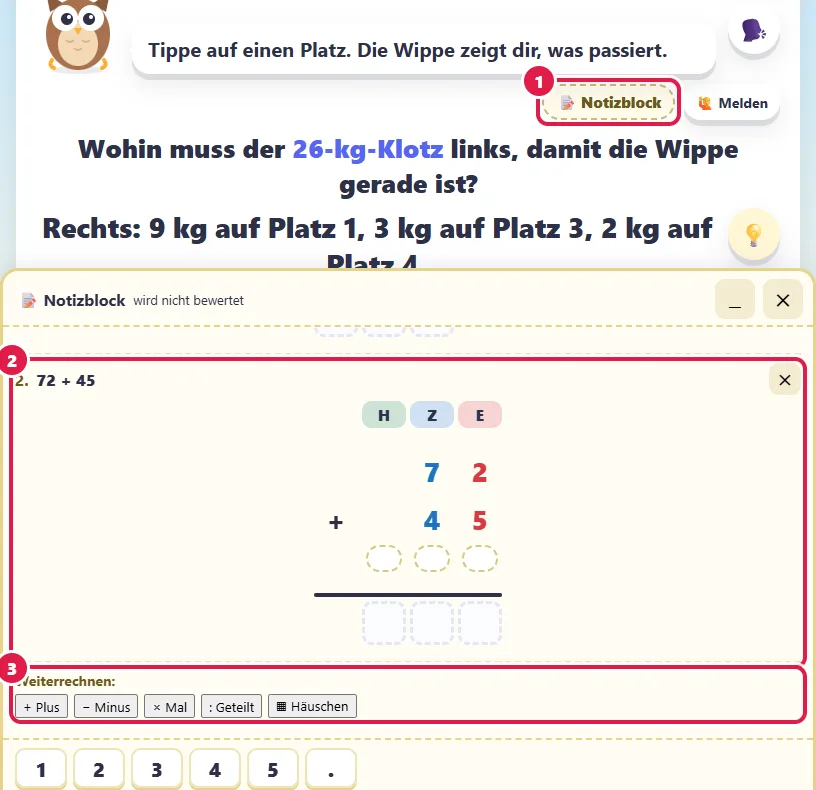
- 📝 Notizblock in der Zeile von „Melden“: Das Kind wählt Plus, Minus, Mal, Geteilt oder Häuschen, tippt seine Zahlen ein und rechnet darunter wie auf einem Blatt, mit Überträgen. Dezimalzahlen stehen am Komma untereinander. Plus und Minus mischen: Antippen des Zeichens vor einer Zahl macht aus + ein − und umgekehrt (bis zu vier Zahlen).
- Eine zweite Rechnung, angehängt an 24 × 3: Ihre erste Zahl ist das Ergebnis, das das Kind eben hingeschrieben hat (72); es kann sie ändern. Bis zu sechs Rechnungen auf einem Blatt, ✕ neben einer Rechnung nimmt sie weg.
- Weiterrechnen: Unter jede Rechnung lässt sich die nächste hängen, mit jedem Verfahren — erst 24 × 3, dann + 45.
- Beides wird nicht bewertet: nichts geprüft, nichts übernommen, nichts gespeichert. Die Antwort gibt das Kind wie immer im Spiel ein; mit jeder neuen Aufgabe ist der Block wieder leer. ▁ verkleinert ihn, ✕ oben schliesst und leert ihn.
- Am Computer und auf dem Tablet quer steht der Block rechts neben der Aufgabe, auf dem Tablet hochkant und auf dem Handy unten — die Aufgabe lässt sich darüber hinaufschieben.
- Ob Notizen und Notizblock erscheinen, stellen Sie ein (Abschnitt 17). Die Statistik zeigt unter Vorgehen, ob ein Kind im Kopf, mit Notizen oder mit dem Notizblock gerechnet hat. Das Abzeichen Kopfrechner zählt Aufgaben mit Notizfeldern, die im Kopf und auf Anhieb gelöst wurden.
9. Endlos-Modus und Ranglisten
Bei vielen Rechenspielen gibt es den Schalter ♾ Endlos — auf der Spielkarte und über den Stufen. Ist er an, startet jede Stufe, die es anbietet, Aufgaben, bis die erste falsch ist; die Stufe zeigt dann den eigenen Rekord. Gezählt werden die richtigen in Folge. Mit eingeschaltetem Timer wird die Zeit nach jeder richtigen Aufgabe etwas knapper — dann zählt es auch als Ende, wenn die Zeit abläuft.
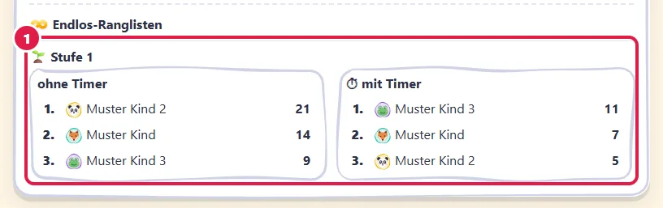
- ♾ Endlos-Ranglisten: je Stufe eine ohne und eine mit Timer. Es zählt der beste Wert jedes Kindes; Testrunden der Aufsicht erscheinen nicht.
- Ranglisten machen besonders Spass, wenn mehrere Kinder mitspielen — Geschwister, Freundinnen und Freunde oder eine Klasse.
- Spielen die Kinder an verschiedenen Geräten, sieht jedes Gerät zuerst nur seine eigenen Rekorde. Erst der Abgleich bringt alle in dieselbe Rangliste.
In der Statistik steht je Spiel und Stufe der beste Wert des Kindes und sein Platz:
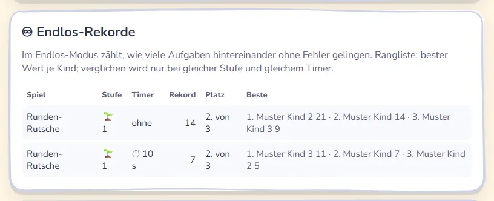
10. Selbst ausprobieren
Als Aufsicht können Sie jedes Spiel selbst spielen. Ihre Runden zählen als Testrunden und erscheinen nicht in der Statistik der Kinder.
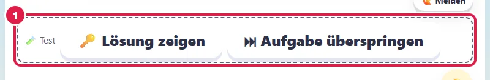
- Die Leiste 🧪 Test gibt es nur für die Aufsicht: 🔑 Lösung zeigen und ⏭ Aufgabe überspringen — praktisch, um ein Spiel rasch kennenzulernen.
Auf dem Startbild sehen Sie zudem, welche Stimme vorliest (mit ▶ Probe), und bei Spielen mit Wortlisten 🔍 Inhalte prüfen (Abschnitt 11).
11. Freigabe: was Kinder sehen
Neue Spiele und neue Wortlisten werden erst geprüft, bevor Kinder sie sehen. Was noch nicht geprüft ist, ist gesperrt. Unter Freigabe entscheiden Sie selbst:
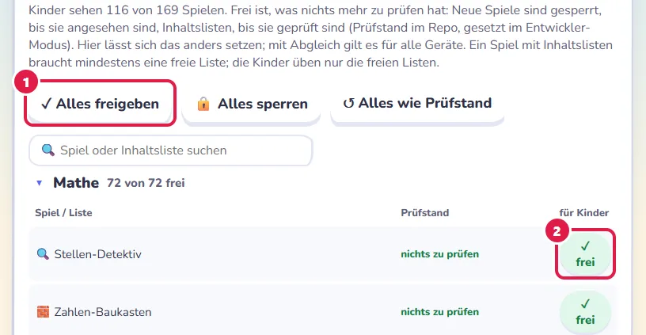
- Alles freigeben, Alles sperren oder Alles wie Prüfstand (zurück auf den geprüften Stand) — für alle Spiele auf einmal.
- Je Spiel ✓ frei oder 🔒 gesperrt; je Fach klappt eine Gruppe auf („12 von 20 frei · 3 zu prüfen“), das Suchfeld findet ein Spiel oder eine Liste. „↺ wie Prüfstand“ nimmt Ihre eigene Wahl für ein Spiel zurück.
- Spiele mit Wortlisten oder Sätzen: Die Listen lassen sich einzeln freigeben. Ein Kind sieht ein solches Spiel, sobald mindestens eine Liste frei ist; im Spiel kommen nur freie Inhalte vor.
- Die Freigabe gilt für dieses Gerät. Mit dem Abgleich kommt sie auf die anderen Geräte.
Im Bereich Spiele zeigt der Filter 🔍 Zu prüfen der Aufsicht, was noch gesperrt ist.
🔍 Wortlisten selbst prüfen
„🔍 prüfen“ neben einer Liste in der Freigabe öffnet das Spiel mit der Prüfansicht, ebenso „🔍 Inhalte prüfen“ auf dem Startbild des Spiels.
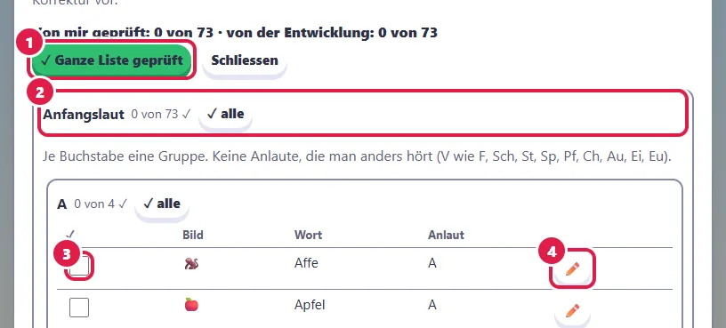
- ✓ Ganze Liste geprüft hakt alles ab, was noch offen ist.
- Ein Abschnitt hat einen eigenen Inhalt (etwa Bezeichnungen, Sätze, Fragen) und ist für sich abzuhaken; Gruppen darin haken Sie mit ✓ alle ab. Ganz geprüfte Abschnitte und Gruppen sind beim Öffnen zu und grün gerahmt.
- Jeder Eintrag hat ein Kästchen. ✓E daneben heisst: von der Entwicklung schon geprüft.
- Stimmt ein Eintrag nicht, schlägt ✏️ der Entwicklung eine Korrektur vor. Sie steht dann unter Verwaltung → Meldungen und geht auf demselben Weg wie eine Fehlermeldung (Abschnitt 14).
Ihre Haken gelten nur auf diesem Gerät. Sind alle Einträge abgehakt, ist die Liste auf diesem Gerät für Kinder frei; einzelne Haken geben noch nichts frei.
12. Statistik und Fazit
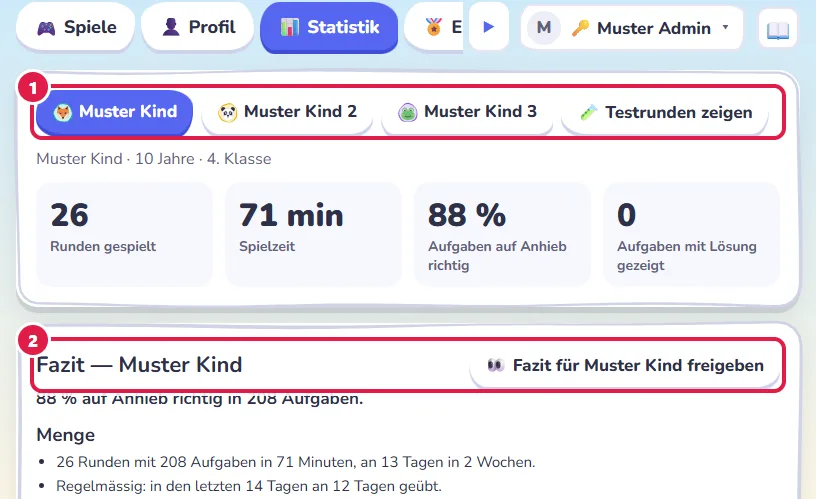
- Oben wählen Sie das Kind. „🧪 Testrunden zeigen“ blendet Ihre eigenen Probe-Runden ein.
- Fazit in Worten: Menge, Qualität, Konzentration, Stärken und Schwächen, Auffälligkeiten. Es entsteht nach festen Regeln aus den Runden, ohne KI, und jede Aussage nennt ihre Zahlen. Mit „👀 Fazit für … freigeben“ sieht das Kind eine freundliche Fassung in seiner eigenen Statistik.
Weiter unten:
- Kennzahlen: Runden, Spielzeit, Anteil Aufgaben auf Anhieb richtig (ohne Fehler und ohne Tipp) und Aufgaben, bei denen die Lösung gezeigt wurde.
- Das empfehle ich für …: wo die nächste Stufe dran ist, was wiederholt werden sollte, wann ein Timer reizvoll wäre — mit „Jetzt üben ➜“ direkt ins Spiel. Das Kind sieht höchstens drei davon als Karten mit „▶ Los“ (Bild unten).
- Wann wird gelernt? Minuten je Tag, Wochentag und Tageszeit. Lieber oft und kurz als selten und lang.
- Konzentration: ob Zeit und Fehler gegen Ende einer Runde oder Sitzung zunehmen.
- Vorgehen: nicht nur ob, sondern wie ein Kind löst — etwa ob es alle Möglichkeiten der Reihe nach sucht, oder ob es im Kopf, mit Notizen oder mit dem Notizblock rechnet (Abschnitt 8).
- 📅 Lernplan: die letzten zwölf Wochen, erfüllt oder nicht (Wochenziel in Abschnitt 6).
- Lernziele (bei mehreren Kindern mit einem Vergleich je Lernziel) und beste Sterne je Spiel und Stufe, Endlos-Rekorde und die letzten Runden.
- Version ganz unten, etwa „Eulenpfad 1.0.0 · Kern 1.43.0“ — hilfreich, wenn Sie der Entwicklung etwas schreiben; jede Fehlermeldung trägt sie ohnehin mit.
Die Empfehlungen steuern Sie selbst:
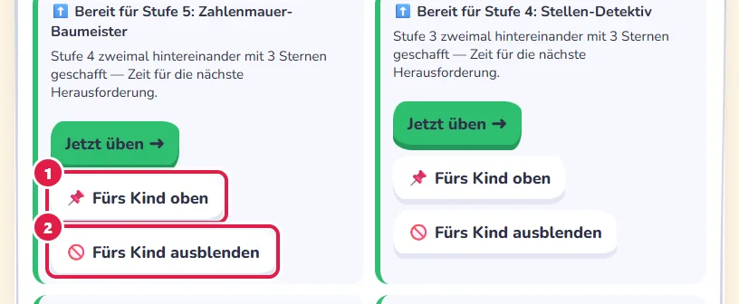
- 📌 Fürs Kind oben heftet einen Vorschlag an, damit das Kind ihn zuerst sieht.
- 🚫 Fürs Kind ausblenden nimmt ihn weg; „↺ Wieder zeigen“ holt ihn zurück.
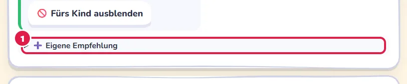
- ➕ Eigene Empfehlung: Sie wählen selbst Spiel und Stufe. ⓘ erklärt, wie das Programm die Vorschläge ordnet.
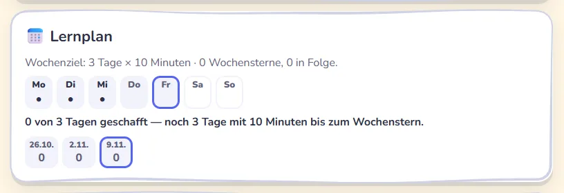
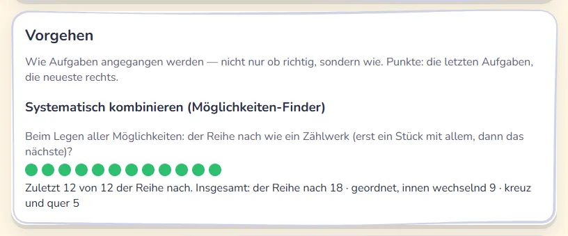
13. Erfolge: Wochenstern und Abzeichen
Als Aufsicht wählen Sie oben das Kind, wie in der Statistik.
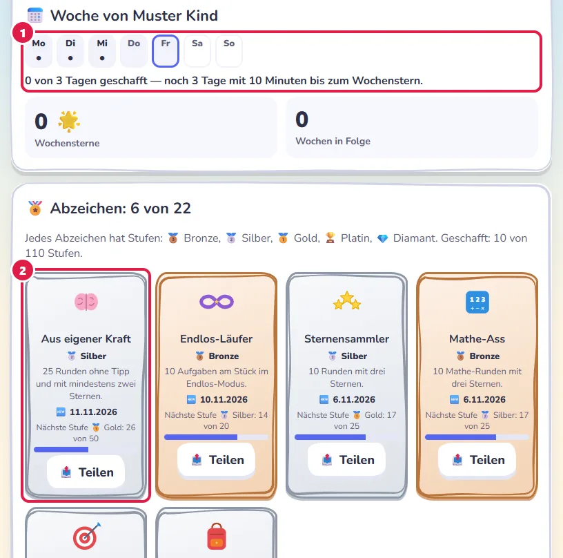
- 📅 Meine Woche (für Sie: „Woche von …“): sieben Tage, ★ = Ziel des Tages erreicht, • = gespielt. Dazu die Wochensterne 🌟 und wie viele Wochen in Folge. Das Kind sieht die Woche auch in seiner Statistik.
- Abzeichen (22 Stück) für Runden, drei Sterne, alle sechs Stufen, verschiedene Spiele, Wochenziele, gefundene Fehler, Kopfrechnen, frühes Üben, den Aufstieg und mehr. Jedes hat fünf Stufen: 🥉 Bronze, 🥈 Silber, 🥇 Gold, 🏆 Platin, 💎 Diamant — etwa 1, 10, 50, 100 und 500 Runden; die Abstufung ist je Abzeichen eigen. Die Kachel zeigt die erreichte Stufe und den Weg zur nächsten. Neue Stufen tragen 🆕, bis das Kind sie gesehen hat. Testrunden zählen nicht.
- 🏆 Meine Podestplätze: wo das Kind in einer Endlos-Rangliste auf Platz 1 bis 3 steht.
- 📤 Teilen macht aus einem Abzeichen ein Bild (Vorname, Titel, Datum) und öffnet den Teilen-Dialog des Geräts oder speichert es. Das geschieht nur, wenn das Kind darauf tippt; weitere Angaben reisen nicht mit.
14. Fehlermeldungen der Kinder
Findet ein Kind einen Fehler (falsch gewertet, Fehler in Text, Bild oder Lösung, nicht lösbar), tippt es im Spiel auf 🙋 Melden, wählt die Aufgabe (diese oder die davor) und schreibt kurz, was nicht stimmt. Das Spiel legt Aufgabe, Lösung und die letzten Eingaben dazu.
- Neue Meldungen zeigt 🙋 an der Verwaltung, Untertab Meldungen.
- Sie lesen und entscheiden: bestätigt oder kein Fehler (mit einer Erklärung fürs Kind).
- Bestätigte Meldungen leiten Sie weiter an die Entwicklung, immer ohne den Namen des Kindes (Klasse, Spiel, Stufe, Aufgabe, Eingaben, Begründung, Version). Der Weg richtet sich nach den Einstellungen (Abschnitt 17): zuerst an den Meldungsserver der Entwicklung, wenn einer eingetragen ist und sich ausweist; sonst per E-Mail aus Ihrem eigenen Mailprogramm (Betreff mit Programm, Version, Meldungsnummer und Spiel); sonst kopieren Sie den Text. Im Verlauf der Meldung steht dann, wie sie ging („Bemerkung Nr. …“, „per E-Mail“ oder „als Text kopiert“).
- „🔄 Antworten der Entwicklung abfragen“ holt den Stand: geplant, behoben oder kein Fehler. Das Kind sieht die Antwort mit 🔔 in seiner Statistik. Behobene Meldungen zählen für das Abzeichen Fehlerfinder.
💡 Eigene Anregungen: Darunter können Sie der Entwicklung selbst schreiben — eine Idee für ein neues Spiel, eine Verbesserung, Inhalte oder ein Lehrmittel, das anders schreibt. Das geht auf demselben Weg, die Antwort holen Sie ebenso ab. Die Kinder sehen davon nichts.
15. Daten sichern und einlesen
Ganz unten in der Statistik:
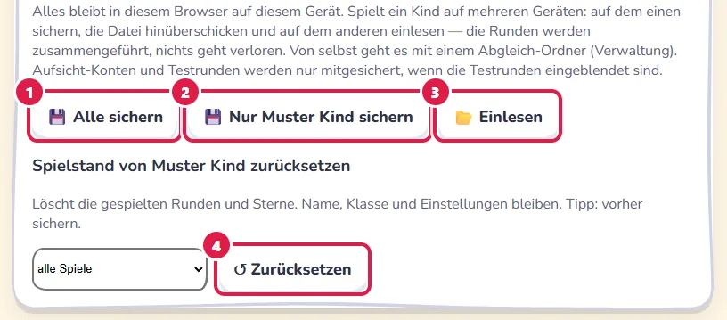
- Alle sichern lädt eine Datei lernspiele-…-Datum.json herunter. Bewahren Sie sie auf, zum Beispiel auf einem USB-Stick oder in Ihrem Cloud-Ordner.
- Nur … sichern sichert ein einzelnes Kind.
- Einlesen holt eine gesicherte Datei zurück. Dabei wird zusammengeführt: Runden, die schon da sind, zählen nur einmal, nichts geht verloren.
- Zurücksetzen löscht die Runden eines Kindes (alle Spiele oder eines). Name, Klasse und Einstellungen bleiben.
Die PIN der Aufsicht wird nie mitgesichert. Gesicherte Dateien enthalten Vornamen und Lernstand — geben Sie sie nur Personen, die das Kind begleiten.
16. Mehrere Geräte abgleichen
Spielt ein Kind am Tablet und am Laptop, oder haben Geschwister eigene Geräte, sorgt der Abgleich dafür, dass Statistik und Ranglisten überall vollständig sind.
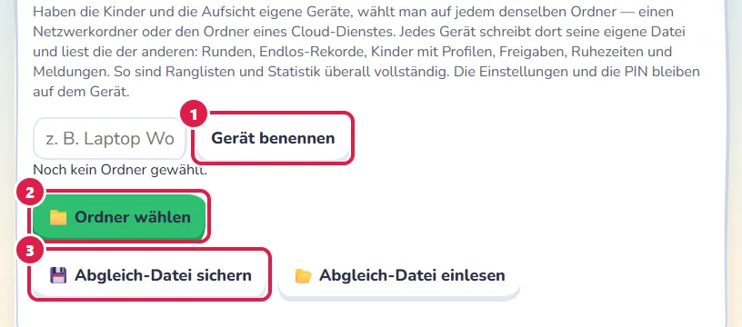
- Gerät benennen, zum Beispiel „Laptop Wohnzimmer“ — so sehen Sie später, woher Daten kommen.
- Ordner wählen: auf jedem Gerät denselben Ordner, etwa einen Netzwerkordner oder den Ordner eines Cloud-Dienstes. Jedes Gerät schreibt dort seine eigene Datei und liest die der anderen. Das geht heute in Chrome und Edge am Computer.
- Ohne Ordner (iPad, Android-Tablet, Firefox): Abgleich-Datei sichern, auf das andere Gerät bringen und dort Abgleich-Datei einlesen — und umgekehrt.
Abgeglichen werden Runden, Endlos-Rekorde, Kinder, Profile (mit Lernplan und Empfehlungen), Freigaben, Ruhezeiten und Meldungen. Wochensterne und Abzeichen rechnet jedes Gerät aus den Runden selbst. Auf dem Gerät bleiben die PIN, die Einstellungen, die Haken der Prüfansicht und die Angabe zu Kopfhörern.
17. Einstellungen
Die Einstellungen stehen in Blöcken und gelten für alle Kinder auf diesem Gerät, viele je Spiel auch abweichend.
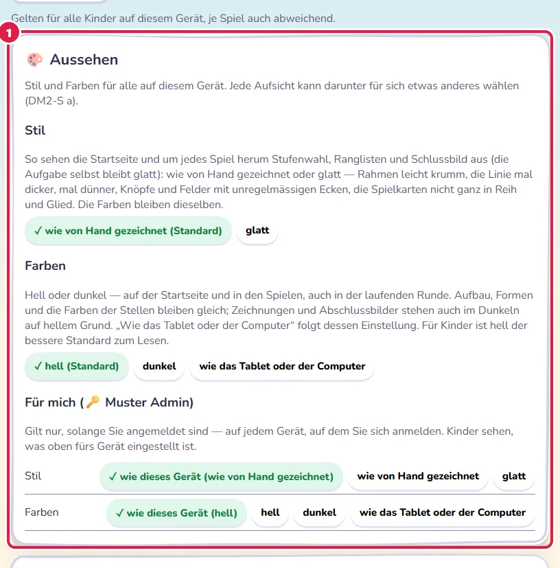
- 🎨 Aussehen: Stil wie von Hand gezeichnet (Standard) oder glatt — Startseite, Stufenwahl, Ranglisten und Schlussbild, die Aufgabe bleibt glatt. Farben: hell (Standard), dunkel oder wie das Tablet oder der Computer. Unter Für mich wählt jede Aufsicht für sich etwas anderes; das gilt, solange sie angemeldet ist.
Im Block 🎮 In den Spielen steht zuerst das Dezimalzeichen:
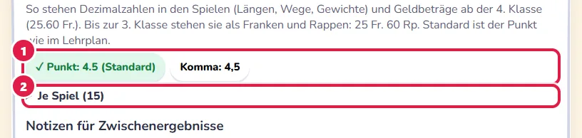
- Für alle Spiele: Punkt (4.5, wie im Lehrplan, Standard) oder Komma (4,5) — so, wie es das Kind im Heft schreibt.
- Je Spiel abweichend: „wie global“, Punkt oder Komma.
Geldbeträge schreiben die Spiele bis zur 3. Klasse als „25 Fr. 60 Rp.“, ab der 4. Klasse als „25.60 Fr.“ — mit dem eingestellten Zeichen.
Notizen für Zwischenergebnisse: nach Stufe (Standard — in den unteren Stufen ohne, damit Kopfrechnen geübt wird), immer oder nie (Kopfrechnen). Notizblock für schriftliches Rechnen: ab Stufe 4 (Standard), immer, wo Notizen sind, oder nie; ohne Notizen gibt es auch keinen Block. Beides auch je Spiel (Abschnitt 8). Abschluss-Animation: am Ende einer geschafften Runde ein kurzes bewegtes Bild, das zum Spiel passt; Tippen überspringt es, „Bewegung reduzieren“ des Geräts zeigt gleich das Schlussbild.
🧒 Kinder: ob sich Kinder selbst anlegen; ob sie Timer, Reihenfolge der Teile und Vorlesen selbst umstellen (Standard ja) und selbst zwischen hell und dunkel wechseln (Standard nein) — je Kind abweichend im Profil (Abschnitt 4); die Sortierung der Spiele und ob Kinder sie selbst wählen. Fehler melden durch Kinder: aus, ab der 3. Klasse (Standard, weil die Begründung geschrieben wird), ab der 5. Klasse oder alle Kinder. Die Aufsicht kann immer melden.
🔊 Ton und Ruhezeiten: Unter 🤫 Ruhezeiten wählen Sie mit „➕ Zeitspanne“ Wochentage und eine Zeit von–bis und je Zeitspanne, was ruht: Abschluss-Animation, Klänge, Vorlesen der Eule, Hören. Je Spiel gilt eine Ruhezeit wie eingestellt, hier nicht oder hier ganz. 🎧 Dieses Gerät wird mit Kopfhörern benutzt nimmt das Hören (auf Wunsch auch das Vorlesen) von der Ruhezeit aus. Spiele, die Ton brauchen, zeigen in einer Ruhezeit „🎧 Diese Runde braucht Ton“ mit „🔊 Ton für diese Runde an“ — oder sie fehlen im Bereich Spiele, wenn Sie das so einstellen; Zufall und Zufallsmix nehmen sie dann nie.
Meldungen an die Entwicklung: der Weg — automatisch (Meldungsserver, sonst E-Mail, sonst Text), nur Server, nur E-Mail oder nur Text — und, falls nötig, eine eigene Adresse. Erlaubt ist ein Server auf diesem Gerät (http://localhost:…) oder ein Server im Netz über https://. Leer lassen heisst: die Vorgabe der Entwicklung. „Verbindung prüfen“ prüft die Adresse im Feld und sagt, was antwortet, zum Beispiel „✓ … erreichbar: https://…, Protokoll 1, Unterschrift der Entwicklung geprüft.“ Ein Server im Netz, der sich nicht mit dem Schlüssel der Entwicklung ausweist, bekommt keine Meldung.
Speicher: wie viel Platz Runden und Rekorde auf diesem Gerät belegen, mit Warnung ab 80 % und dem Knopf „Browser bitten, nichts von selbst zu löschen“. Ohne Abgleich-Ordner erinnert die Verwaltung oben ans Sichern, wenn 14 Tage lang nicht gesichert wurde. Safari löscht die Daten einer Seite, die sieben Tage lang nicht geöffnet wurde — dort besonders regelmässig sichern (Abschnitt 15).
Ganz unten setzt ↺ Alles auf Standard alle Einstellungen zurück, auch die je Spiel.
18. Mithelfen: Spiele prüfen (Entwicklermodus)
Lehrpersonen und Eltern können der Entwicklung helfen, neue Spiele und Wortlisten zu prüfen, bevor sie für alle sichtbar werden.
- Unter Verwaltung → 🛠 Entwicklung tippen Sie „✉️ Entwicklermodus anfordern“. Ihr Mailprogramm öffnet eine Vorlage an die Entwicklung; bitte Rolle, Schule oder Organisation (oder woher wir uns kennen) und das, was Sie prüfen möchten, ergänzen.
- Die Entwicklung schickt Ihnen einen persönlichen Schlüssel an Ihre Absenderadresse. Sie geben ihn unter Entwicklung ein und tippen „Freischalten“ (dafür muss der Server der Entwicklung erreichbar sein).
- In den Spielen erscheint eine Leiste mit „Spiel angesehen“ und „Bemerkung“, in der Freigabe „✓ angesehen“ je Spiel; die Haken in der Prüfansicht der Wortlisten gelten dann für alle. Was Sie markieren, wird eingereicht und wirkt erst, wenn die Entwicklung es übernommen hat — bis dahin bleibt alles wie vorher. Die Entwicklung übernimmt nach einer festen Richtlinie.
Gespeichert wird beim Server nur Ihr Name und ein Prüfwert des Schlüssels, nicht Ihre E-Mail-Adresse. Bitte den Schlüssel nicht weitergeben; „Schlüssel auf diesem Gerät vergessen“ entfernt ihn vom Gerät.
☕ Eulenpfad unterstützen
Alle Spiele bleiben kostenlos, ohne Anmeldung und ohne Werbung. Wer die Arbeit daran unterstützen möchte, kann das freiwillig hier tun. Die Kinder sehen diesen Hinweis nirgends.
19. Häufige Fragen
Die Spielstände sind weg — was ist passiert?
Meist wurden die Browserdaten gelöscht, oder es wurde in einem privaten Fenster gespielt (dort vergisst der Browser alles beim Schliessen). Mit einer gesicherten Datei holen Sie alles zurück (Abschnitt 15).
Ein Kind sieht ein Spiel nicht.
Es ist vermutlich noch gesperrt (Abschnitt 11), oder ein Filter blendet es aus (Fach-Reiter, Filter → Klasse „🎒 Meine Klasse“), oder es braucht Ton und ist während einer Ruhezeit ausgeblendet (Abschnitt 17).
Die Eule liest nicht vor.
Ist der Ton aus (🔇 oben rechts)? Gilt gerade eine Ruhezeit für das Vorlesen? Hat das Gerät eine deutsche Stimme? Ohne Stimme fehlt der Knopf 🗣️; eine Stimme lässt sich in den Einstellungen des Geräts unter Sprache oder Bedienungshilfen dazuladen.
Mehrere Kinder an einem Gerät?
Kein Problem: Jedes Kind tippt beim Start seinen Namen an. Runden und Sterne werden getrennt gezählt.
Geht es ohne Internet?
Ja, wenn der Ordner der Spiele auf dem Gerät liegt: Doppelklick auf index.html genügt. Die Online-Version braucht zum Öffnen Internet; gespeichert wird aber auch dort nur im Browser.
Die Anleitung für Kinder: So spielst du. · Impressum und Datenschutz